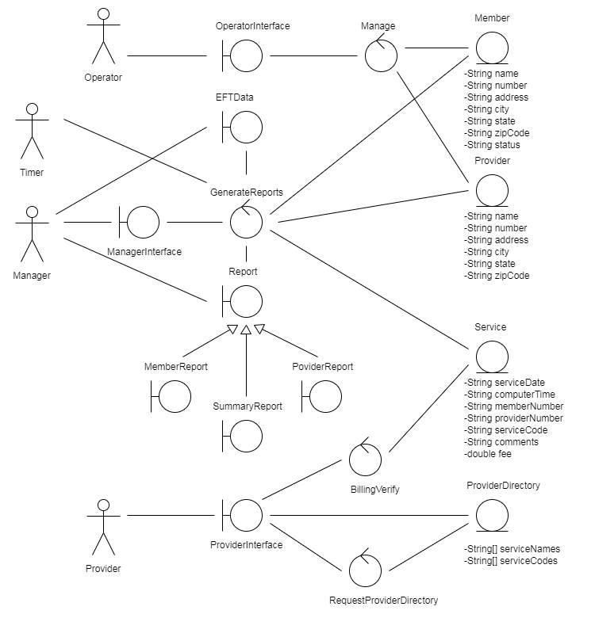

Submitter is Joseph Daly
Joseph Daly CWID: 11988309 jrdaly2@crimson.ua.edu - Time spent: 6 hours
David Dillard CWID: 11943697 dldillard@crimson.ua.edu - Time spent: 5 hours
Jacob Pacheco CWID: 12016535 jmpacheco@crimson.ua.edu - Time spent: 5 hours
Zachary Stiles CWID: 12018285 zmstiles@crimson.ua.edu - Time spent: 5 hours
Jacob Grinstead CWID: 12018239 jgrinstead@crimson.ua.edu - Time Spent: 5 hours
Joseph Daly (20%):
- wrote HTML for report.html file (100%)
- BillChocAn activity diagram (100%)
- worked on entity, boundary, and control classes (12.5%)
- worked on the list of requirements (12.5%)
- modified project 1 to account for given feedback (20%)
David Dillard (20%):
- worked on Activity diagrams for manage provider and member as well as their extends (100%)
- worked on Activity diagram for request provider directory (100%)
- updated Project 1 use case diagram (100%)
- worked on entity, boundary, and control classes (12.5%)
- worked on the list of requirements (12.5%)
Jacob Pacheco (20%):
- updated use cases (33%)
- worked on entity, boundary, and control classes (25%)
- worked on list of requirements (25%)
- verify member card activity diagram (100%)
Zachary Stiles (20%):
- updated use cases (33%)
- worked on list of requirements (25%)
- worked on entity, boundary, and control classes (25%)
- worked on stereotype diagram (70%)
Jacob Grinstead (20%):
- main Activity Diagram (100%)
- worked on entity, boundary, and control classes (25%)
- worked on list of requirements (25%)
- worked on stereotype diagram (30%)
- updated use cases(33%)
The majority of the ChocAn Data Center’s processes will be computerized besides physical record keeping and physical card verification. The computerized sections will be constructed in Java for its object oriented design structure.
All member, provider, report, and EFT data will be stored in the ChocAn Data Center. The necessary hardware is ChocAn terminals for providers, card reader, operator terminals, and the ChocAn data center’s hardware.
ChocAn’s system interacts with systems created by outside companies, like ACME’s accounting programs. Users must be able to manage ChocAn members and providers, as well as request ChocAn billing information.
Management consists of adding, removing, and editing information of said members and providers.
Below is the stereotyped class diagram of the ChocAn system.
Below is the main activity diagram.

Below is the activity diagram for the Bill ChocAn use case.

Below is the activity diagrams for the manage member, add member, delete member, and update member use cases below.


Below is the activity diagrams for the manage provider, add provider, delete provider, and update provider use cases below.


Below is the activity diagram for the request provider directory use case.

Below is the activity diagram for the request member report use case.

Below is the activity diagram for the request provider report use case.

Below is the activity diagram for the request summary report use case.

Below is the activity diagram for the run accounting procedure use case.

Below is the activity diagram for the verify member card use case.

Below is the activity diagram for the write EFT date use case.